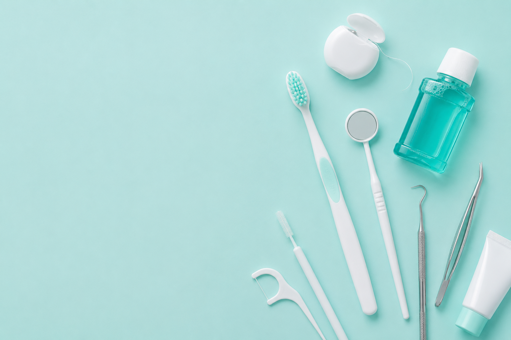
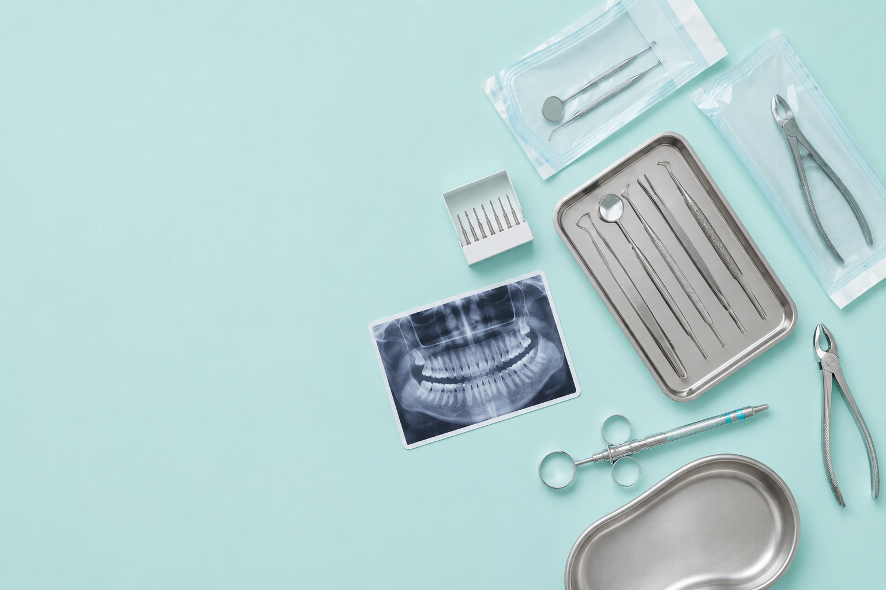

一般治療
虫歯や歯周病の治療、定期検診やクリーニングなど、お口の健康を維持・改善するための基本的な診療を行っています。症状を一時的に改善するだけでなく、再発を防ぐための予防にも力を入れ、患者さまの状態に応じた治療計画をご提案。お悩みやご不安を丁寧にお伺いし、できるだけ負担の少ない方法を選択しながら、安心して継続的に通っていただける診療体制を大切にしています。
- ・虫歯治療
- ・歯周病治療
- ・定期検診
- ・クリーニング

虫歯や歯周病の治療、定期検診やクリーニングなど、お口の健康を維持・改善するための基本的な診療を行っています。症状を一時的に改善するだけでなく、再発を防ぐための予防にも力を入れ、患者さまの状態に応じた治療計画をご提案。お悩みやご不安を丁寧にお伺いし、できるだけ負担の少ない方法を選択しながら、安心して継続的に通っていただける診療体制を大切にしています。

親知らずの抜歯や顎・お口まわりのトラブルなど、外科的な処置が必要な症状にも幅広く対応しています。外科治療は不安や緊張を伴いやすいため、現在の状態や治療内容、リスクについて丁寧にご説明し、ご理解・ご納得いただいたうえで進めていきます。痛みや身体的負担に十分配慮しながら、安心して治療を受けていただけるよう、環境づくりと細やかな対応を心がけています。

ホワイトニングやセラミック治療など、見た目の美しさや機能性の向上を目的とした自由診療にも対応しています。患者さまのご希望やライフスタイル、ご予算などを丁寧にお伺いし、それぞれに適した治療計画をご提案。治療内容のメリット・デメリットについてもわかりやすくご説明し、ご納得いただいたうえで進めていきます。より快適で自分らしいお口環境づくりを、長期的な視点でサポートいたします。

| 診療時間 | 月 | 火 | 水 | 木 | 金 | 土 | 日・祝 |
|---|---|---|---|---|---|---|---|
| 9:30ｰ13:00 | ● | ● | ● | ー | ● | ● | ー |
| 14:30ｰ18:30 | ● | ● | ● | ー | ● | ▲ | ー |
※土曜日の午後は18：00まで